快速入门
本手册介绍系统每个页面的功能与操作方式。系统用于管理火车模型藏品（机车、车厢、动车组、先头车）的录入、统计、文件归档与数据导入导出。
访问与导航
启动服务后，浏览器打开 http://127.0.0.1:8000。顶部导航栏提供七个入口：
- 首页 — 藏品统计概览
- 机车 / 车厢 / 动车组 / 先头车模型 — 四类模型的列表与录入
- 信息维护 — 品牌、系列、车型等参考数据
- 系统维护 — 导入、导出、数据库重置
通用交互
以下操作在所有模型列表页通用：
- 排序：点击表格列头按该列升/降序排列。
- 筛选：列头下拉框输入文字过滤。
- 复制：行内「复制」按钮将该行数据回填到「添加」表单，便于快速录入相似模型。
- 检索：行内「检索」按钮用品牌搜索地址 + 货号在官网搜索（缺地址或缺货号时禁用）。
- 可搜索下拉：型号、系列、品牌、商家、芯片等关联字段均为可输入搜索的下拉框。
data/{模型类型}/{品牌缩写}_{货号}/ 自动组织；修改品牌缩写或货号时，文件夹会自动重命名。
首页与统计
展示全部藏品的整体统计概览，支持四个维度的表格与饼图切换。
展示内容
- 统计条：模型总数、模型总价（¥）。
- 维度标签：按类型 / 按比例 / 按品牌 / 按商家。
- 视图切换：每个维度可在「表格」与「饼图」间切换。
饼图模式下，每个维度显示「数量分布」与「金额分布」两张图，鼠标悬停可见数量与占比。
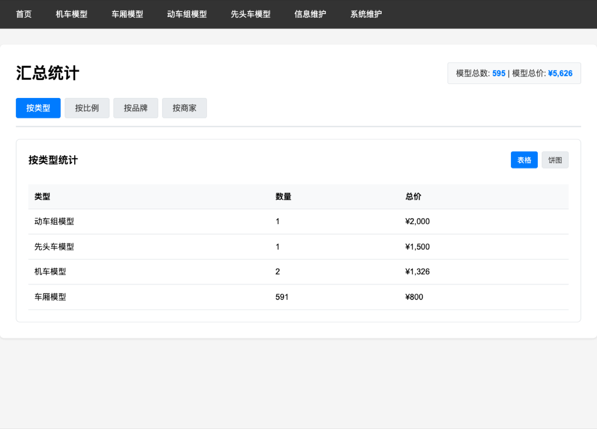
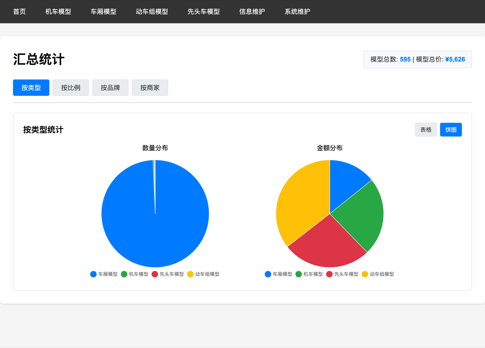
机车模型
管理机车（Locomotive）的列表、录入、编辑、删除与文件归档。
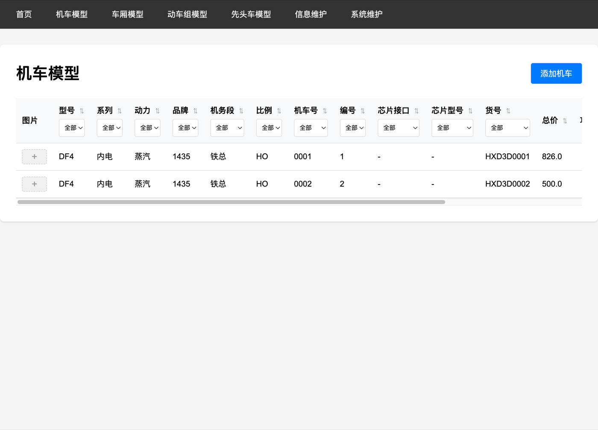
录入机车
点击「添加机车」打开模态框，填写下表字段后保存。
| 字段 | 说明 |
|---|---|
| 型号 / 系列 / 动力 | 选择型号后，系列与动力会自动联动填充 |
| 机车号 | 4–12 位数字，允许前导 0，同一比例内唯一 |
| 编号 | 1–4 位数字，无前导 0 |
| 芯片接口 / 芯片型号 | 选择接口后，芯片型号仅列出兼容项 |
| 价格 | 支持四则表达式，如 288+538，自动计算总价 |
| 品牌 / 商家 / 购买日期 | 品牌必填；商家与日期可选 |
| 货号 / 产品地址 | 货号用于文件命名；产品地址在列表显示为可点击链接 |
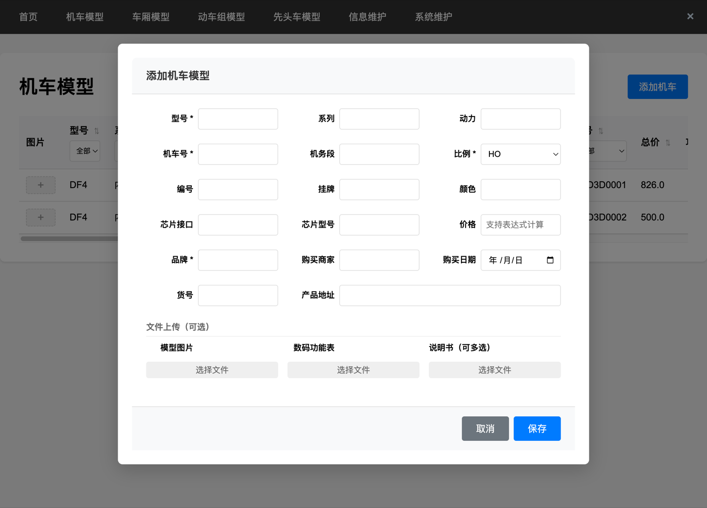
车厢模型
管理车厢套装（CarriageSet），一个套装可包含多节车厢项（CarriageItem）。
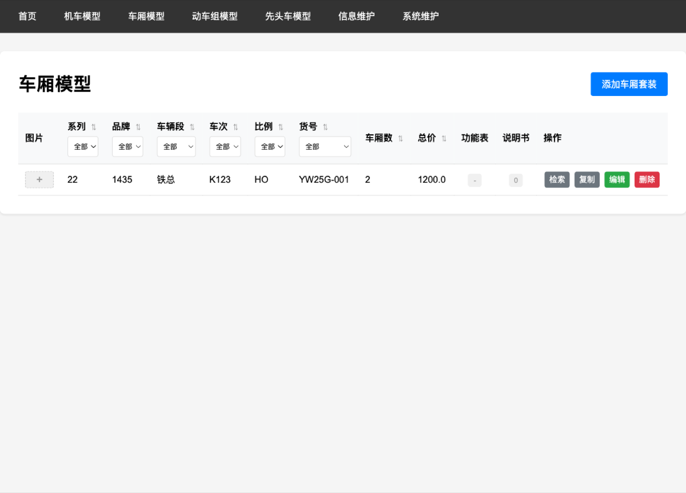
录入车厢套装
套装级字段（系列、车辆段、比例、品牌、车次、货号等）与单节车厢分开填写。核心是车厢列表：可动态「添加车厢」「删除」行，每节车厢单独指定系列、车型、车辆号、颜色与室内灯型号。
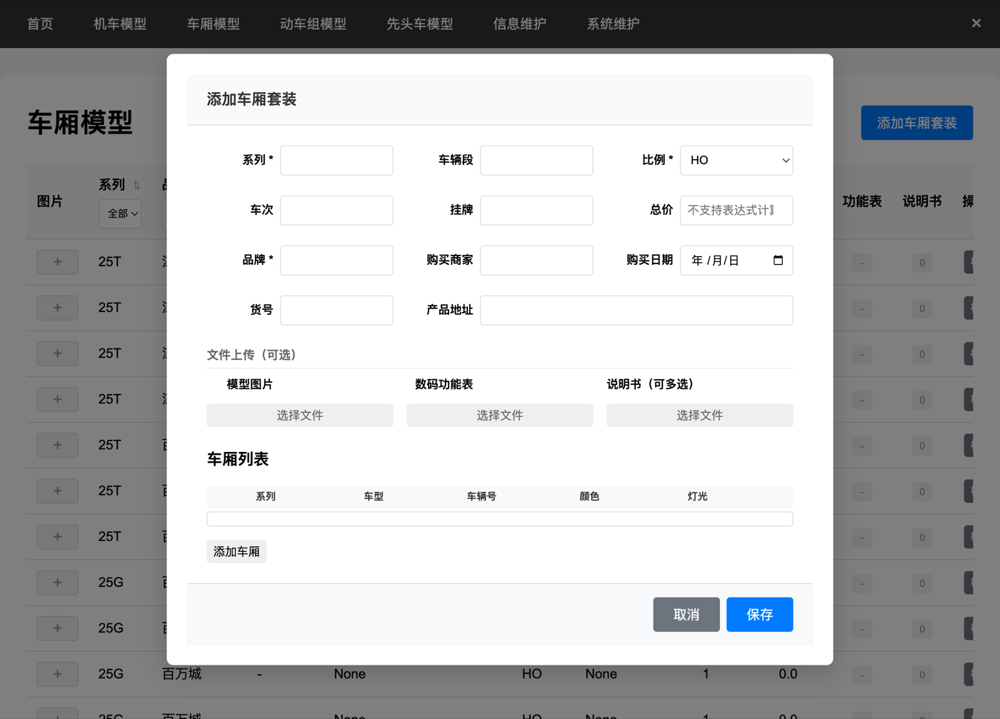
动车组模型
管理动车组（Trainset），含编组、头车灯、室内灯、芯片等动车组特有属性。
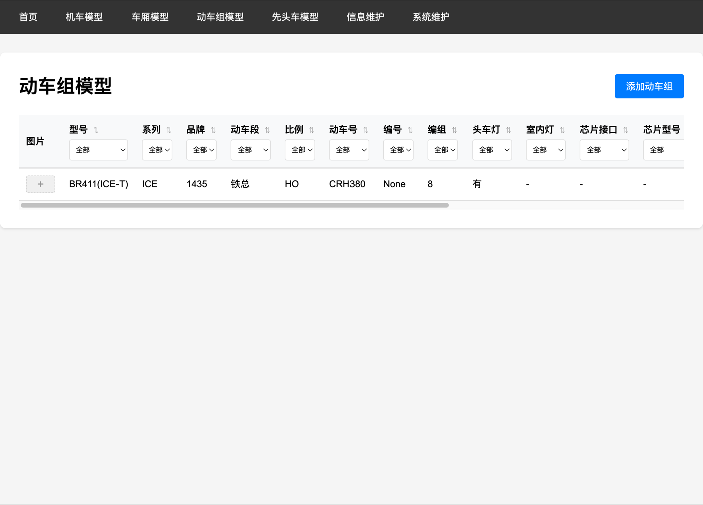
特有字段
| 字段 | 说明 |
|---|---|
| 动车号 | 3–12 位数字，允许前导 0，同一比例内唯一 |
| 编组 | 数字，默认 1（如 8 编组） |
| 头车灯 | 是 / 否 |
| 室内灯 | 按「品牌 + 车型 + 比例」适用规则匹配的型号 |
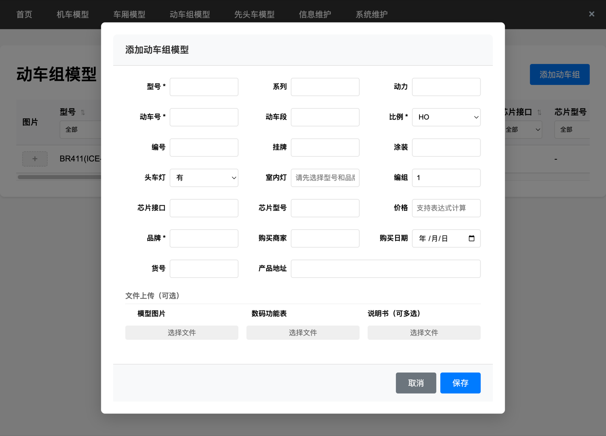
先头车模型
管理动车组的驾驶头车（LocomotiveHead），字段较机车/动车组精简。
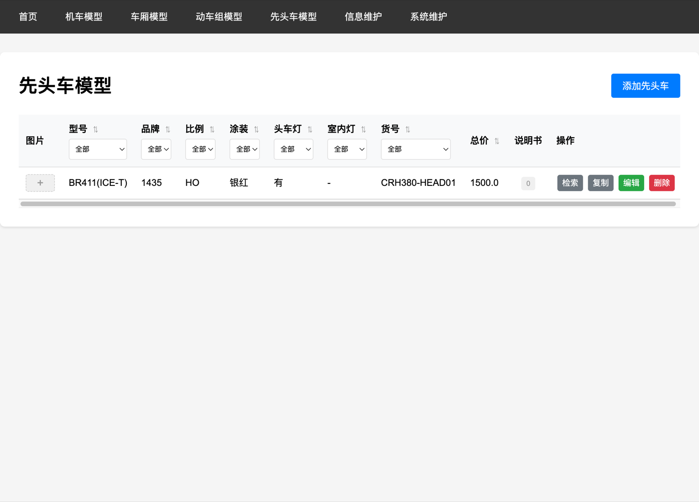
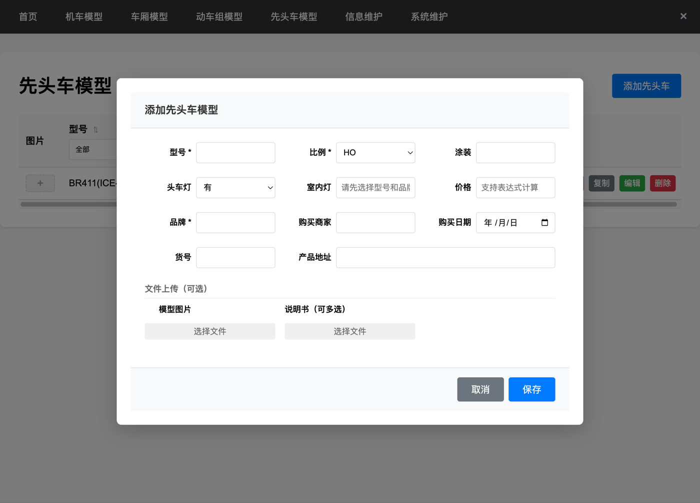
先头车的室内灯适用查询采用 brand_only 模式，仅按品牌级规则匹配（不要求车型）。
模型详情
点击列表中的模型图片，打开详情模态框，查看属性并管理文件。该模态框对所有模型类型通用（先头车无功能表区）。
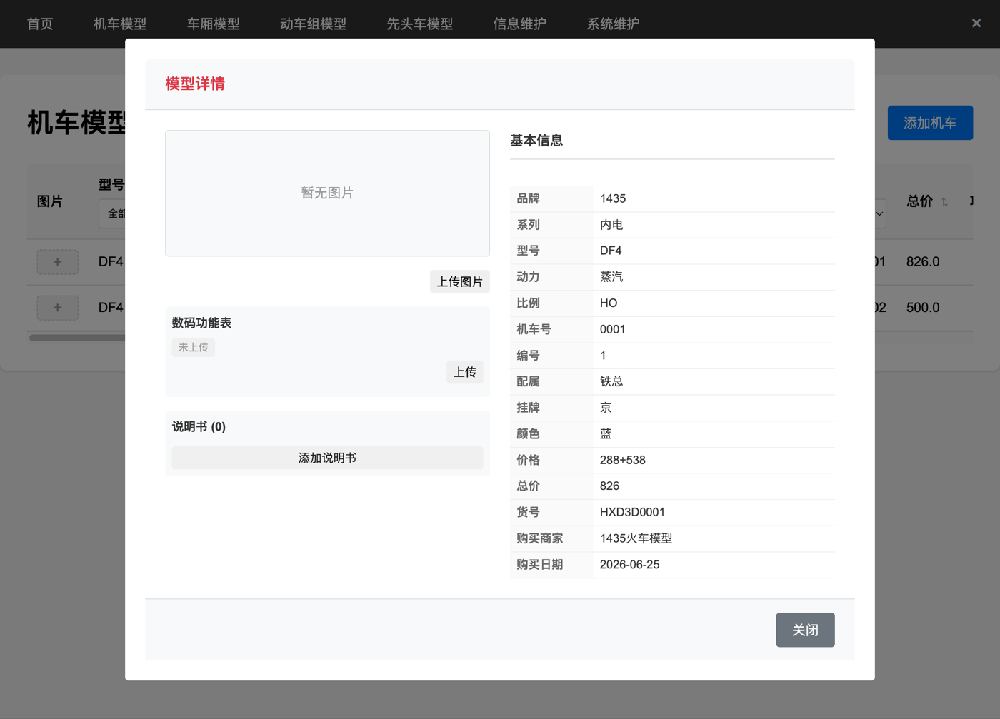
可执行操作
- 图片：上传（覆盖旧图）、查看原图、下载、删除。
- 数码功能表：上传后自动触发 AI/OCR 解析（见功能表解析）；可查看、下载、删除、重新解析。
- 功能键表：解析成功后显示 F0–F31 → 功能名 → 说明；双击单元格可内联编辑。
- 说明书：可上传多个，每个独立查看 / 下载 / 删除。
信息维护
集中管理 14 类参考数据，分 7 组。左侧选择分类，右侧添加 + 表格（行内编辑）。
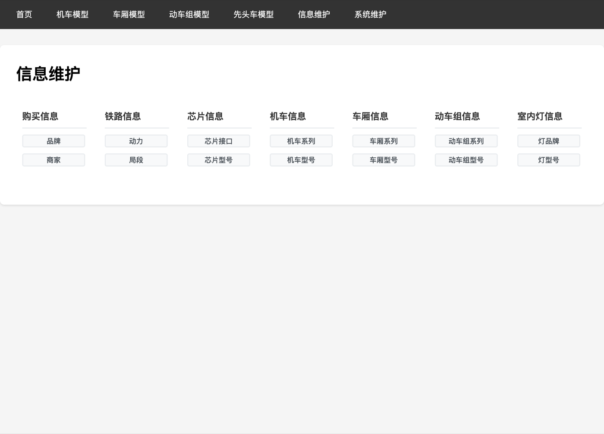
七个分组
| 分组 | 包含 |
|---|---|
| 购买信息 | 品牌、商家 |
| 铁路信息 | 动力、局段 |
| 芯片信息 | 芯片接口、芯片型号 |
| 机车 / 车厢 / 动车组信息 | 各自的系列、车型 |
| 室内灯信息 | 灯品牌、灯型号 |
特殊行为
- 品牌缩写：留空时按名称自动生成（中文取拼音首字母；英文按长度规则）。缩写全局唯一。
- 芯片型号：接口为多选（一个型号可支持多种接口）。
- 灯型号：编辑走独立子页（见下图），用三列多选生成「品牌 × 车型」笛卡尔积适用规则。
- 删除保护：被业务数据引用的参考项禁止删除。
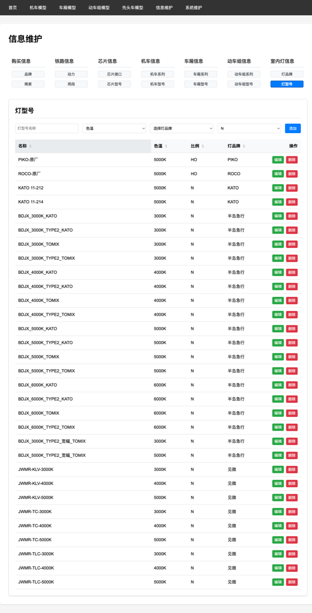
系统维护
数据导入导出、文件打包、数据库重置。
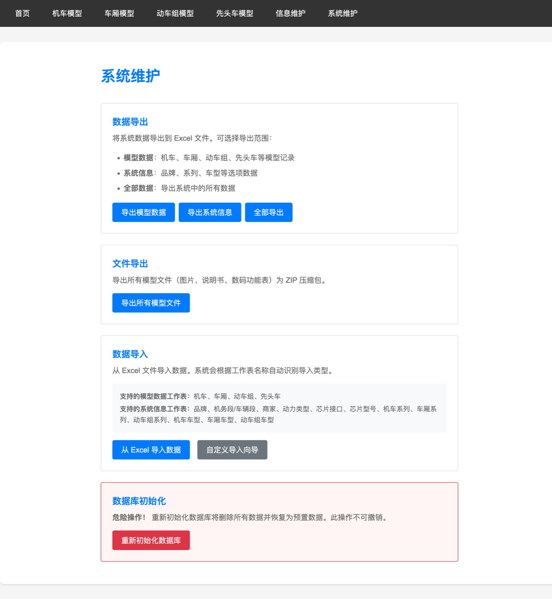
数据导出
- 导出模型数据：四种模型记录导出为 Excel（车厢套装导出时公共字段合并单元格）。
- 导出系统信息：品牌、系列、车型等参考数据。
- 全部导出：模型 + 系统信息。
文件导出
「导出所有模型文件」将全部图片 / 说明书 / 功能表打包为 ZIP（TMM_ModelFiles_时间戳.zip）。
智能导入
选择 Excel 后，系统按工作表中文名自动识别类型；先预检查冲突，无冲突直接导入，有冲突则弹窗选择「跳过」或「覆盖」。
数据库初始化 危险
「重新初始化数据库」会清空全部业务数据并重新播种预置参考数据，不可逆。前端需二次确认，后端要求 X-Confirm 请求头。
自定义导入向导
灵活适配任意 Excel 结构，自定义「工作表 → 数据类型」「列 → 字段」映射，支持模板保存复用与灯数据导入。入口：系统维护 → 「自定义导入向导」。
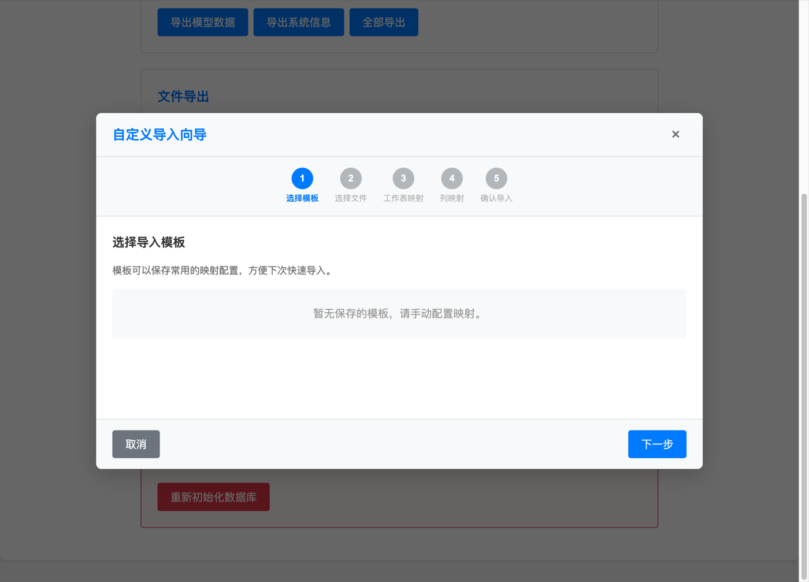
五步流程
- 选择模板：套用已保存模板，或跳过手动配置。
- 选择文件：选择 .xlsx 文件，预览工作表数量。
- 工作表映射：把每个工作表映射到 18 张系统表之一（系统类 + 模型类）。
- 列映射：为每个字段指定对应 Excel 列；模型类可设冲突处理（跳过 / 覆盖）。
- 确认导入：预览各表数据与冲突；可选保存模板；点击「开始导入」写入。
功能表 AI/OCR 解析
上传数码功能表文件后，自动提取 DCC 功能键 F0–F31 到功能名称的映射，免去手工录入。
触发时机
- 在机车 / 动车组 / 车厢详情中上传功能表文件时自动触发（先头车不可上传）。
- 详情模态框内「重新解析」按钮手动触发。
三种解析模式
| 模式 | 说明 |
|---|---|
ai | 强制 AI 视觉（Claude 或 OpenAI）；图片直接识别，PDF 先转图片 |
local | 强制本地 OCR（tesseract 中文+英文）；PDF 先提文本，无文本则转图片 OCR |
auto 默认 | 有 AI 密钥时用 AI，否则静默回退本地 OCR |
解析结果
解析后自动写入功能键表（覆盖旧键），在详情模态框显示「功能键 / 功能名称 / 说明」三列表格。双击单元格可内联编辑功能名或说明；支持「导出 Excel」。
tesseract（含中文语言包）与 poppler：macOS 用 brew install tesseract tesseract-lang poppler。使用 OpenAI provider 需额外 pip install openai。